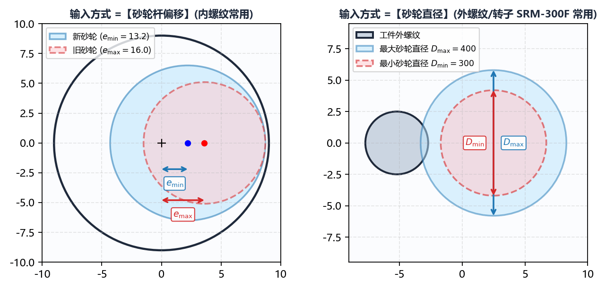
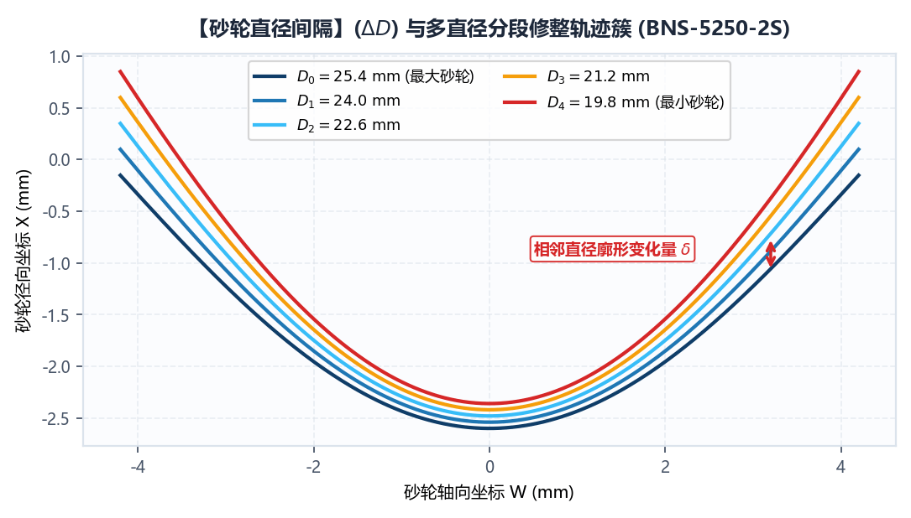
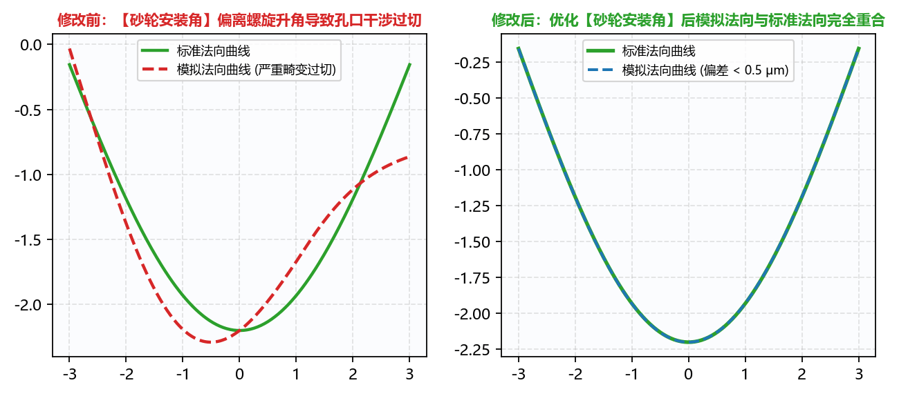

2.3 砂轮范围与安装角
本节说明砂轮工作范围双输入模式、砂轮直径间隔 分档机制及 砂轮安装角 对包络精度的影响。
双输入模式与自动换算
在 高级参数 -> 初始化配置 -> 输入方式 中切换后，基本参数 第 5、6 行标签会在两种模式间自动联动变化：

模式 A：砂轮杆偏移（推荐用于内螺纹）
从内孔中心距防撞角度控制砂轮工作尺寸区间：
砂轮杆偏移工件中心最小距离（e_min）：新砂轮（最大外径）对应的中心偏移；砂轮杆偏移工件中心最大距离（e_max）：旧砂轮（最小外径）对应的中心偏移，须满足e_max > e_min ≥ 0且不超过工具箱 -> 最大偏移算出的碰撞极限；- 内部换算关系（基于导入齿形最大径向深度
R_profile,max）：
模式 B：砂轮直径（外螺纹/蜗杆/转子）
直接按砂轮外径管理新旧修整区间：
最大砂轮直径（D_max）：新砂轮工作外径（如400 mm或内圆砂轮43 mm）；最小砂轮直径（D_min）：磨损报废下限外径（如300 mm或35 mm，须满足D_max > D_min > 0）。
单砂轮纯 DXF 模式锁定规则
- 当
高级参数 -> 程序信息 -> 程序模式选择模式-10或模式-99（单直径仅输出 DXF，不生成宏程序）时：砂轮直径模式下自动锁定最小砂轮直径与砂轮直径间隔（仅按最大砂轮直径计算）；砂轮杆偏移模式下自动锁定砂轮杆偏移工件中心最小距离与砂轮直径间隔（仅按砂轮杆偏移工件中心最大距离计算）。- 系统仅按单一砂轮尺寸计算并导出 1 套 DXF 验证文件。
砂轮直径间隔 与多档宏程序
随砂轮磨损外径减小，空间啮合接触线形态会改变，需分段重算无干涉修整轮廓：

- 分档总数计算：
- 数控宏程序自动跳转：所有直径档位
STEP_n合并至同一宏程序中，运行时按机床当前砂轮直径变量（如 SiemensDRESSER[24]/_OVR[167]、Fanuc#550/#603）执行IF ... GOTO/GOTOF自动选档。 - 推荐间隔取值：
- 小直径内螺纹砂轮（10 ~ 50 mm）：设为
0.1 ~ 0.5 mm； - 大直径外螺纹/蜗杆/转子砂轮（250 ~ 500 mm）：设为
2.0 ~ 10.0 mm，兼顾精度与程序体积。
- 小直径内螺纹砂轮（10 ~ 50 mm）：设为
砂轮安装角 调优准则
砂轮安装角 须严格等于机床砂轮主轴实际偏转角（单位：°）：

- 外螺纹/蜗杆/转子（
Σ = λ）：无孔壁碰撞风险，建议保持勾选右侧同步框使安装角等于中径螺旋升角λ，此时接触线最短、修正量最小； - 内螺纹受限状态（
Σ < λ）：- 如
BNS-5250-2S理论升角17.0795°、BNS-2020-R理论升角17.6568°，因深孔避让只能倾转3.5° ~ 15°； - 严禁虚填角度：取消同步框后如实填写真实倾角，否则偏差角将带来数十微米过切/欠切并破坏接触角；
- 倾角过小预警：若
|λ - Σ|过大可能触发二次包络自交，应先用工具箱 -> 最大偏移校核孔口安全间隙后尽量增大安装角。
- 如